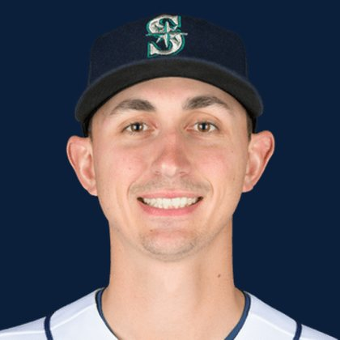

BASE KEEP
The Keep · The Diamond · The Farm
Player File · SP SEA

George Kirby
#68 · SP · Seattle Mariners · age 28 · B/T RR · 6' 4" / 215 lbs · MLB debut 2022 · Rye, USA
Keep avg155.2
# Boards10
BK Value1,651
Spread58-235
Pitching
| Year | G | GS | W | L | SV | HLD | IP | K | BB | HR | ERA | WHIP | K/9 |
|---|---|---|---|---|---|---|---|---|---|---|---|---|---|
| 2026 | 23 | 23 | 8 | 9 | 0 | 0 | 136.2 | 114 | 31 | 17 | 3.89 | 1.31 | 7.51 |
| 2025 | 23 | 23 | 10 | 8 | 0 | 0 | 126.0 | 137 | 29 | 15 | 4.21 | 1.19 | 9.79 |
The Keep#157BK 1,651
BK's Pitchers#46BK 4,976
The Diamond#157BK 1,651
The 2026 line
Keep #157 · avg 155.2 · 10 boards · 3.89 ERA, 1.31 WHIP, 114 K in 136.2 IP
Baseball Savant
Starcast · spray · pitch
Percentile ranks (Starcast) plus the official Savant spray chart for bats and pitch chart for arms. Open the full Baseball Savant page.
Pitcher · 2026
xERA
59
xwOBA
59
FB Velo
84
FB Spin
53
CU Spin
20
K %
32
BB %
92
Whiff %
25
Chase %
84
Barrel %
55
Hard Hit %
30
EV
30
Max EV
63
Pitch chart
Minus
- Board spread 58-235 (177 ranks).
Board graph
Spread 58-235 · 10 sources
Every Board
Spread 58-235 · 10 sources
| Source | Rank |
|---|---|
| FantasyPros Dynasty ECR | 58 |
| RotoGraphs Model | 97 |
| Pitcher List | 146 |
| ESPN | 167 |
| Razzball | 167 |
| NFBC ADP | 167 |
| ATC ROS | 167 |
| The Dynasty Dugout | 171 |
| FanGraphs The Board | 177 |
| TDG Points | 235 |
BK News
All players · The Keep · The Farm · The Diamond · BK News · The Lineup · Pitchers · Calculator